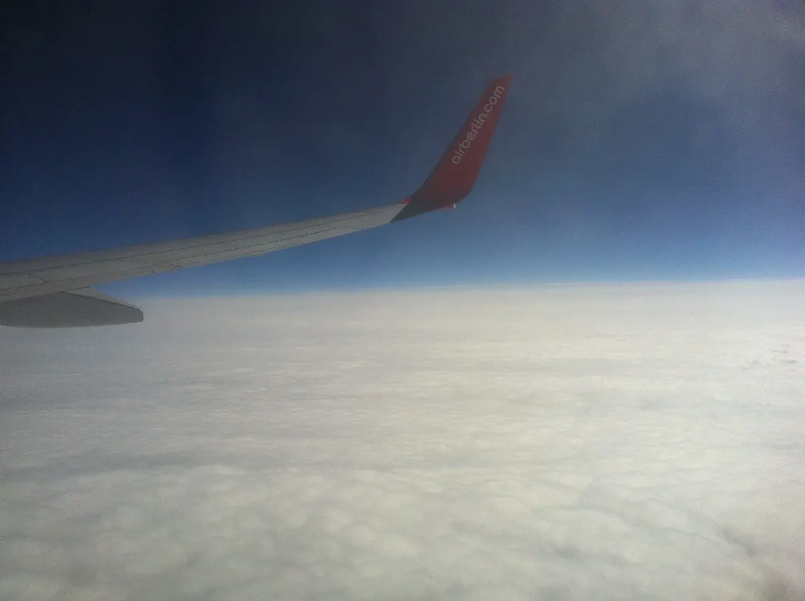
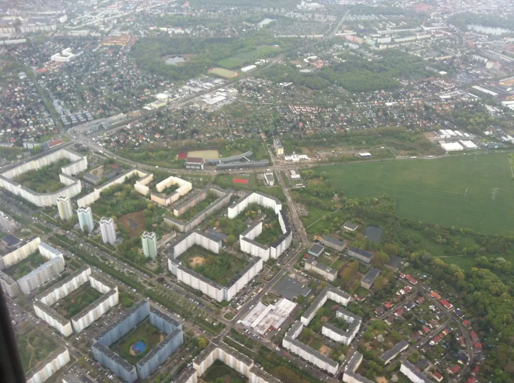
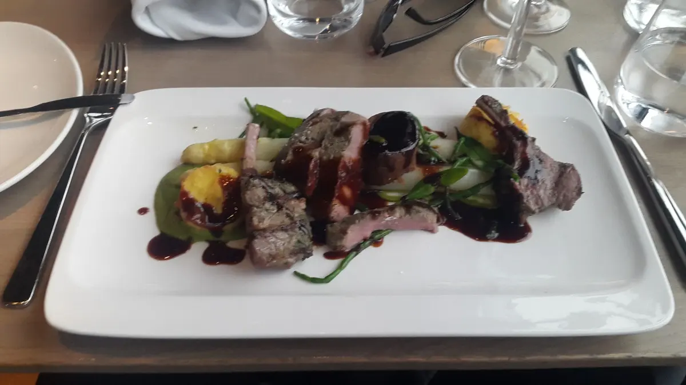
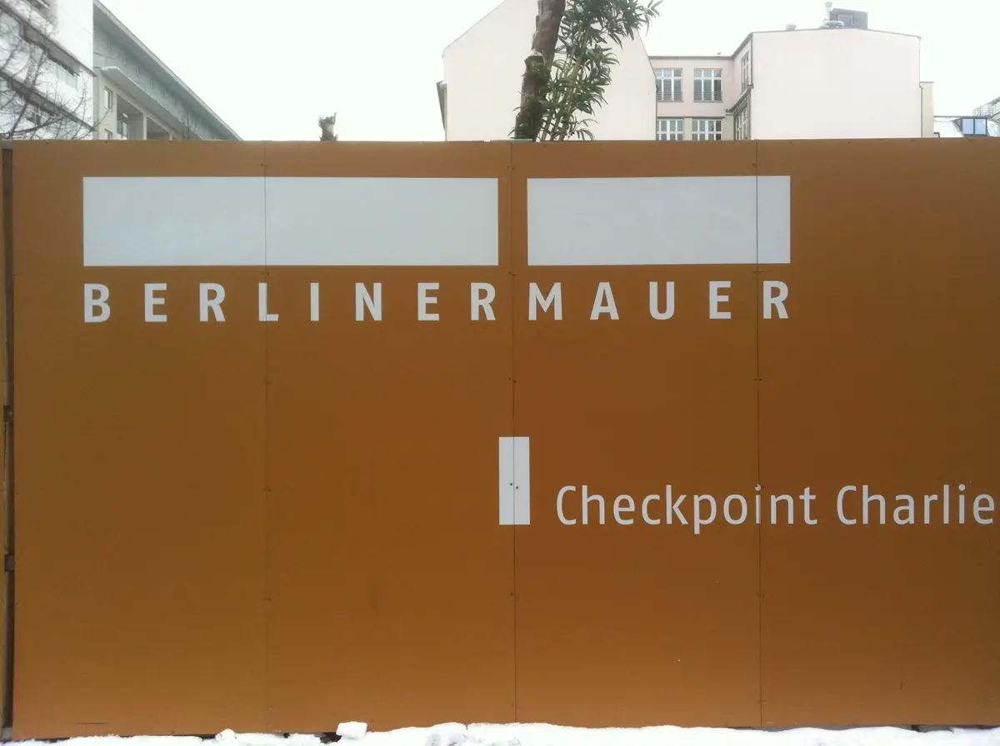
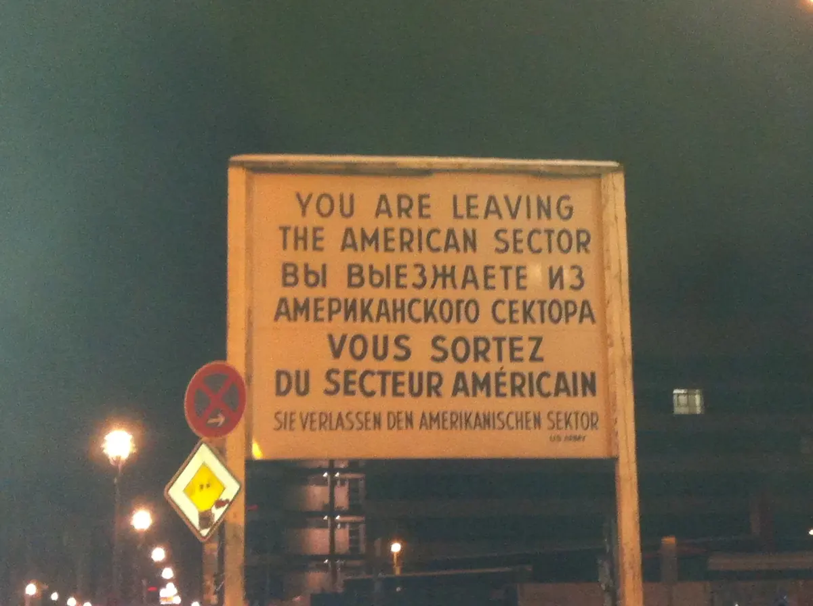

← Tous les textes
Histoires de voyage
·
·1 min
Berlin (July)
Le texte littéraire ci-dessous reste dans sa langue originale, le français.
↓
 Crédit image : © Die 2 Lap 2014
Crédit image : © Die 2 Lap 2014

Berlin in the Horizon · Crédit image : © Die 2 Lap 2014
Another perspective · Crédit image : © Die 2 Lap 2014
Meet meat at meal in Berlin · Crédit image : © Die 2 Lap 2014
Checkpoint Charlie · Crédit image : © Die 2 Lap 2014
A lot of symbolism · Crédit image : © Die 2 Lap 2014
© Die 2 Lap
Historique de publication
Publié initialement sur Chroniques d’ailleurs ↗ · 28 juillet 2015
♥
Ce texte reste avec vous.Vous souhaitez le partager ?
Lecture
Texte introuvable
Cette publication n’existe pas ou son identifiant est incorrect.
Retour aux textes